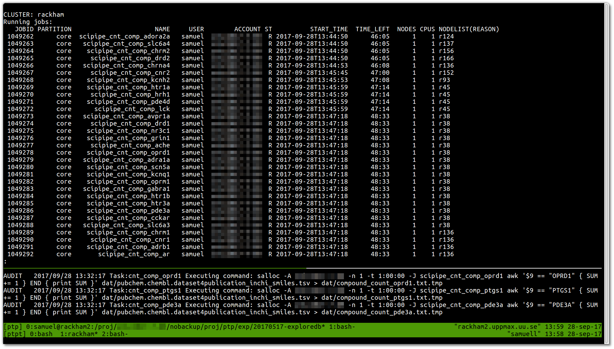

First production run with SciPipe - A Go-based scientific workflow tool
Today marked the day when we ran the very first production workflow with SciPipe, the Go-based scientific workflow tool we've been working on over the last couple of years. Yay! :)
This is how it looked (no fancy GUI or such yet, sorry):

The first result we got in this very very first job was a list of counts of ligands (chemical compounds) in the ExcapeDB dataset (download here) interacting with the 44 protein/gene targets identified by Bowes et al as a good baseline set for identifying hazardous side-effects effects in the body (that is, any chemical compounds binding these proteins, will never become an approved drug).
The resulting data still needs some closer review (some gene names were not available in the dataset etc), so right now just including a preview screenshot:
Fun! :) This is only the very beginning of this project, for which scipipe was actually designed from the start. So a lot more workflow coding is going to happen. There are also still many plans for polish and improvements amassed in the issue queue, but it is fun to be able to say that it has now been solving real world problems.
On a personal note, I found it enlightening to note the shift in perspective happening when starting to use an API to solve real world problems versus sitting and over-obsessing over small details based on imaginary use cases. Suddenly a very clear prioritization of what to really fix, and what to really not, emerged :)
Why not continue with SciLuigi?
Previous data analysis projects have been done using Spotify's Luigi in combination with our helper tool SciLuigi which we released a pretty detailed paper about, so let me add a few words about why we developed this new tool.
We had some success with SciLuigi and were pretty happy with it, until some of the problems with how Python is implemented started to show up:
- Firstly, since Python is an untyped, interpreted language we sometimes had HPC cluster jobs failing seven days into a seven day HPC job, because of a simple KeyError.
- Secondly, our way of keeping track of HPC jobs with one Luigi worker per job already when queuing it up in the SLURM resource manager with the blocking salloc command, created some problems. The fact that Luigi creates separate processes for each worker, which communicate with the central Luigi scheduler via HTTP over the network lead to robustness problems over around 64 workers, with HTTP-timeouts and other similar glitches.
Thus, I'm very excited we are now running our Go-based tool. While it takes a lot of inspiration from both Luigi and SciLuigi, such as Luigi's very powerful file naming strategy and the named port ideas we developed in SciLuigi, it also solves both of the mentioned problems above:
- Firstly, Go is a typed and compiled language that will almost always warn about simple errors already at the compilation step.
- Go does not need spawn separate processes for keeping track of external commands, only threads, and communication and coordination is done completely inside the Go binary.
SciPipe further adds even more improvements such as full dataflow behaviour, meaning that construction of the tree of concrete tasks to execute doesn't need to be done before leaving over to the execution engine. Instead, tasks are scheduled on-the-fly while the engine is running, based on data fed into processes. This will greatly simplify some workflow constructs we had problems with in SciLuigi.
One such example is when there is a parameter to be used in a component further down in the workflow, where this parameter is itself a result of a calculation in some upstream component. Since Luigi strictly separates scheduling and execution it was not possible to handle this in Luigi/SciLuigi without having the main workflow to fire up new Luigi instances using the parameters obtained in the first workflow. The latter case is exactly what we ended up doing with SciLuigi, but resulted in multiple log files and many other issues that made running it quite a mess. This, among many other things should now be a breeze to implement with SciPipe because of its DataFlow + Flow-Based Programming approach.
For something more stable - consider NextFlow
Note though: For those who'd prefer a more mature, stable, and supported solution with a bigger established community, note that NextFlow (see also the paper) has the same benefits in this case, as also being based on dataflow. Let me thus say a few words of why we are still developing our own solution.
The reason is primarily because find the named ports concept in Flow-based Programming to be crucial for our vision of creating a library of re-usable workflow components for our use cases. In concrete terms, this means that inputs and outputs are defined as fields ("ports") bound to components, rather than being unbound variables shared between components in the workflow scope, as is the case in NextFlow. We think this is important in order to make re-usable components self-contained and self-documentary, and also helps with things like autocompletion (type "componentname.<tab>" and you will get a list of the available ports). Nextflow takes a slightly different view here and instead treats the commandline program being integrated, as the re-usable component, which seems to be a reasonable assumption in the Genomics field which it is focused on.
What is perhaps a more interesting note here though, is that in all the very fruitful discussions I've had with NextFlow creator Paolo Di Tommaso we both whole-heartedly agree about the power and ease of use of the dataflow paradigm. Hopefully we can eventually get support for some of the dataflow specialities in the Common Workflow Language. Let's continue to explore how the process of writing workflows can be made even more fluent, flexible and fun. :)